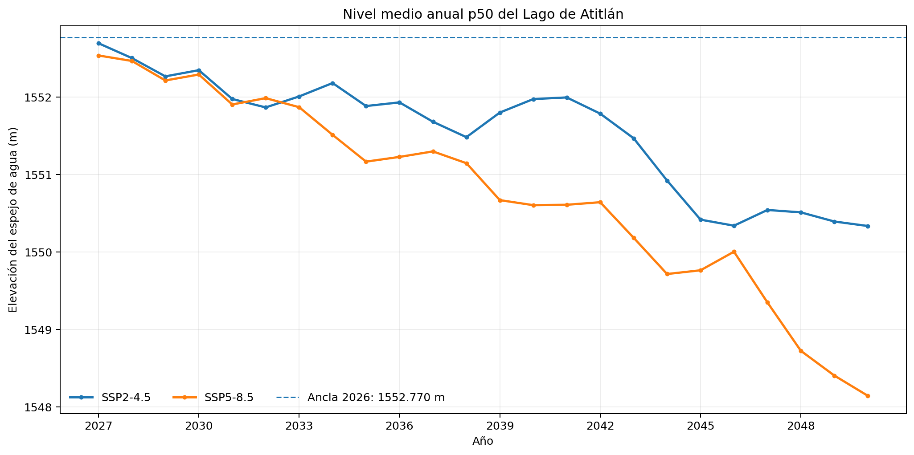
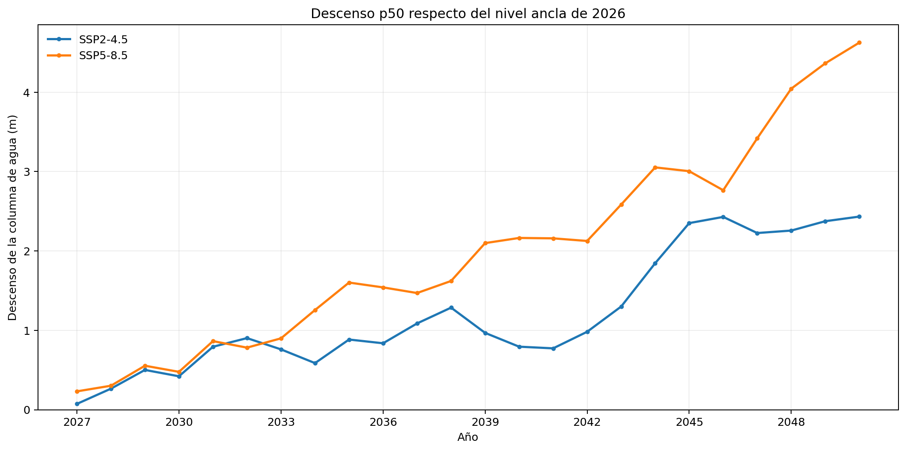
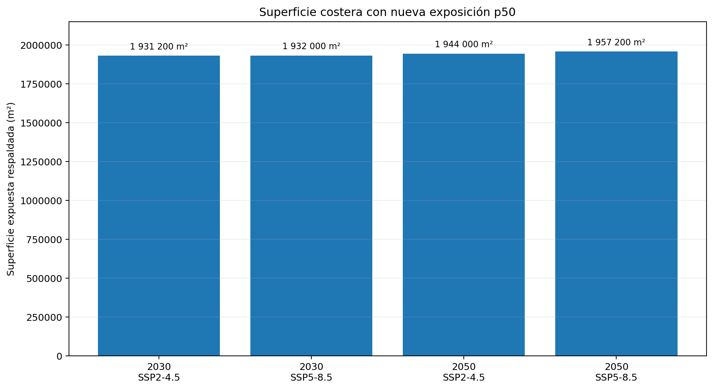

01 · Lectura correcta
Qué representan estas cifras
Los resultados no constituyen una predicción determinista del nivel exacto que tendrá el lago. Representan la respuesta del sistema modelado ante forzamientos climáticos definidos y deben interpretarse junto con la dispersión del ensamble y la incertidumbre espacial.
Para cada escenario se procesaron quince modelos climáticos globales. Cada modelo mantiene su propia trayectoria. Primero se calcula la media anual dentro de cada GCM y después se obtienen los cuantiles p05, p50 y p95 entre los quince modelos. El p50 es la mediana del conjunto y funciona como referencia central para la lectura de los resultados.
El descenso indicado en metros se calcula respecto del nivel ancla de 1552.770 m observado el 29 de agosto de 2026. Por ejemplo, un descenso p50 de 2.433 m significa que la media anual p50 se encuentra 2.433 m por debajo de esa referencia. No significa que el lago deba perder exactamente 2.433 m entre dos fechas concretas ni que todos los modelos produzcan el mismo valor.
El p50 es una medida central del ensamble. Para comprender el resultado completo debe observarse junto con p05 y p95. Además, una elevación modelada no determina por sí sola una línea de costa exacta: la traducción territorial depende de la evidencia espacial disponible.
02 · Serie anual
Trayectoria central entre 2027 y 2050
Los productos anuales muestran una tendencia central descendente de largo plazo, pero la trayectoria no es estrictamente descendente todos los años. Existen recuperaciones parciales porque el balance responde a las anomalías de precipitación, evaporación y caudal de cada periodo. Una tendencia descendente no significa que cada año consecutivo tenga que presentar un nivel inferior al anterior.
Bajo SSP2-4.5, el p50 pasa de 1552.697 m en 2027 a 1550.337 m en 2050. El descenso central respecto del ancla aumenta de 0.073 m a 2.433 m. Entre esos extremos existen años con incrementos parciales y años con descensos, de modo que la señal debe leerse como una tendencia condicionada con variabilidad interanual superpuesta.
Bajo SSP5-8.5, el p50 pasa de 1552.539 m en 2027 a 1548.145 m en 2050. El descenso central respecto del ancla aumenta de 0.231 m a 4.625 m. La separación entre escenarios se hace más visible hacia mitad de siglo, al mismo tiempo que aumenta la dispersión entre GCM.
Las oscilaciones interanuales forman parte de la respuesta hidrológica. Un año con recuperación parcial no invalida una tendencia multianual descendente, del mismo modo que un año de descenso pronunciado no define por sí solo la evolución de largo plazo.

La gráfica muestra la elevación anual p50 del espejo de agua. Las variaciones de un año a otro son parte de la oscilación modelada; la señal de largo plazo se interpreta a partir de la trayectoria completa y no de un solo año.

Aquí el mismo resultado se expresa como metros de descenso respecto de 1552.770 m. Cuanto mayor es el valor vertical, más abajo se ubica el p50 anual respecto del nivel ancla.
El p50 se sitúa aproximadamente entre 42.1 y 47.7 centímetros por debajo del nivel ancla, según el escenario. Es una diferencia vertical del espejo de agua.
El p50 se sitúa aproximadamente entre 2.43 y 4.63 metros por debajo del ancla. La diferencia entre escenarios es mucho más marcada hacia mitad de siglo.
03 · 2030 y 2050
Horizontes principales
Respuesta cercana
Mitad de siglo
En 2030 los valores centrales de ambos escenarios son relativamente cercanos: existe una diferencia de aproximadamente 0.056 m entre sus p50. En 2050 la separación central aumenta de manera considerable y alcanza aproximadamente 2.192 m. Esta divergencia debe interpretarse junto con el rango p05–p95, porque la dispersión entre modelos también crece con el horizonte.
Los primeros años son especialmente importantes para comprender la respuesta espacial. En 2027 los descensos centrales son pequeños en comparación con 2050, pero pueden activar una superficie apreciable de exposición dentro del corredor observado porque numerosos umbrales costeros se concentran cerca del nivel moderno. La respuesta horizontal de la costa no es proporcional de manera simple al cambio vertical.
04 · Ensamble climático
p05, p50 y p95
La tabla siguiente resume los horizontes principales y el horizonte de estrés. El rango p05–p95 describe la dispersión entre los quince GCM utilizados en cada escenario. No debe interpretarse como un intervalo de confianza frecuentista ni como una probabilidad exacta de que el nivel observado quede dentro de esos límites.
| Escenario | Año | p05 (m) | p50 (m) | p95 (m) | Δ p50 vs. 2026 (m) |
|---|---|---|---|---|---|
| SSP2-4.5 | 2030 | 1551.226 | 1552.349 | 1554.024 | −0.421 |
| SSP2-4.5 | 2050 | 1544.475 | 1550.337 | 1551.839 | −2.433 |
| SSP5-8.5 | 2030 | 1550.765 | 1552.293 | 1553.503 | −0.477 |
| SSP5-8.5 | 2050 | 1540.105 | 1548.145 | 1552.810 | −4.625 |
| SSP2-4.5 | 2090 | 1525.547 | 1542.639 | 1552.523 | −10.131 |
| SSP5-8.5 | 2090 | 1511.927 | 1530.124 | 1554.506 | −22.646 |
La amplitud del ensamble aumenta hacia los horizontes lejanos. Este ensanchamiento es una señal importante: mientras la trayectoria central muestra cambios mayores, también crece la diferencia entre modelos. Por ello, la comunicación de los resultados debe evitar presentar únicamente el p50 sin mencionar la dispersión.
05 · Traducción territorial
Resultados espaciales
Los resultados espaciales responden a una pregunta distinta de los resultados temporales. El nivel modelado se expresa en metros de elevación; el mapa intenta establecer qué condición puede asignarse a cada celda dentro del dominio evaluado. Para hacerlo se utiliza evidencia Sentinel-2, soporte batimétrico AMSCLAE y reglas que conservan como inciertos los sectores donde la información no permite una clasificación defendible.
El producto principal es el estado p50. Esta capa representa la clasificación asociada al nivel central del ensamble para un año y escenario. Se complementa con robustez p05–p95, que indica la estabilidad de la clasificación frente a la dispersión entre modelos, y con el consenso entre SSP2-4.5 y SSP5-8.5.
Celda respaldada como agua bajo las reglas de evidencia utilizadas por el producto.
Celda donde el cambio de estado está respaldado por evidencia costera o por el soporte aceptado dentro de la metodología.
Sector donde la información disponible no permite asignar con suficiente respaldo una condición futura de agua o exposición.
Celda que no pertenece al dominio espacial que corresponde evaluar con esa clasificación.
06 · Capacidad de inferencia
Dominio costero evaluado
El dominio costero evaluado ocupa 9.3960 km². Dentro de esa superficie, 2.4724 km² corresponden a evidencia directa, 0.1244 km² a soporte AMSCLAE local y 6.7992 km² permanecen como dominio desconocido. La proporción conocida equivale al 27.64 % del dominio costero evaluado.
Es importante no confundir el 27.64 % con un porcentaje del área total del Lago de Atitlán. La cifra se refiere únicamente al dominio costero que fue definido para evaluar la capacidad de inferencia espacial. El resto del lago cumple otras funciones dentro de la representación y no forma parte de ese denominador.
La existencia de una superficie desconocida relativamente amplia es una consecuencia del criterio conservador del proyecto. Allí donde la costa futura quedaría fuera del rango vertical observado directamente y no existe otra fuente con soporte suficiente, la metodología conserva la incertidumbre en lugar de prolongar artificialmente una línea de costa.
07 · Exposición respaldada
Nueva exposición p50 en 2030 y 2050
Dentro del dominio respaldado, la nueva exposición p50 para 2030 es aproximadamente 1.9312 km² bajo SSP2-4.5 y 1.9320 km² bajo SSP5-8.5. Para 2050 los valores aumentan aproximadamente a 1.9440 km² y 1.9572 km², respectivamente.
Exposición p50
Exposición p50
La diferencia de superficie expuesta entre 2030 y 2050 es pequeña en comparación con el aumento del descenso vertical. Esto no significa que la costa deje de responder al descenso del lago. La explicación metodológica es que una gran parte de los umbrales directamente observados se cruza relativamente temprano, mientras que los sectores restantes carecen de soporte suficiente para continuar ubicando la transición con el mismo nivel de evidencia.

La superficie expuesta se expresa en metros cuadrados. Los valores aproximados equivalen a 1 931 200 m² y 1 932 000 m² en 2030, y a 1 944 000 m² y 1 957 200 m² en 2050, para SSP2-4.5 y SSP5-8.5 respectivamente.
Los productos respaldan cuántos metros cuadrados de superficie costera pasan a condición de exposición dentro del dominio evaluado. No existe un único valor científicamente válido de “metros lineales que retrocede la costa” para todo el lago, porque el desplazamiento horizontal depende de la pendiente y de la geometría local. Un descenso vertical de 1 m puede producir pocos metros de retiro en una ribera inclinada y una distancia mucho mayor en una ribera de pendiente suave. Para obtener metros lineales de retiro por sitio sería necesario calcular transectos locales sobre una superficie topobatimétrica con soporte suficiente.
Cuando se agota el dominio observado, el modelo espacial no transforma la falta de información en nueva exposición. Por eso, una superficie roja que crece poco puede coexistir con un descenso vertical mucho mayor. La zona gris conserva precisamente esa limitación.
08 · Estabilidad frente al ensamble
Robustez p05–p95
La capa de robustez evalúa si la clasificación espacial se mantiene al considerar el rango p05–p95. Esto permite distinguir una exposición que permanece clasificada a través de la dispersión del ensamble de otra que depende del nivel específico utilizado dentro de ese rango.
Para SSP2-4.5 en 2050, aproximadamente 1.9348 km² de la nueva exposición se clasifica como robusta dentro del intervalo p05–p95. En otros horizontes la exposición p50 puede mostrar mayor sensibilidad al ensamble. Por esa razón, la capa de estado p50 no debe utilizarse de manera aislada cuando se requiere una lectura técnica de confianza espacial.
La robustez climática tampoco debe confundirse con la incertidumbre espacial. Una celda puede ser estable frente a los niveles producidos por el ensamble y, sin embargo, encontrarse fuera del dominio donde la geometría litoral está suficientemente respaldada. Son controles diferentes y ambos deben conservarse.
09 · Comparación de escenarios
Consenso entre SSP2-4.5 y SSP5-8.5
El producto de consenso compara directamente la clasificación espacial de los dos escenarios para un mismo año. Su objetivo no es asignar una probabilidad a cada SSP, sino mostrar dónde ambos escenarios producen la misma condición y dónde comienzan a diferir.
Una celda puede clasificarse como agua cierta en ambos escenarios, exposición cierta en ambos, diferencia entre escenarios o incertidumbre en uno o ambos. Esta lectura es especialmente útil porque permite identificar sectores cuya interpretación es menos dependiente del escenario seleccionado y sectores donde la elección del forzamiento climático modifica el resultado.
El consenso debe consultarse por año. A diferencia del estado p50 y la robustez, que dependen de seleccionar un escenario, el consenso ya contiene la comparación SSP2-4.5 versus SSP5-8.5 y por ello no requiere un selector adicional de escenario.
10 · Largo plazo
2090 como horizonte de estrés
El proyecto conserva 2090 para examinar el comportamiento del sistema bajo un horizonte lejano, pero no le asigna el mismo peso interpretativo que a 2030 y 2050. Para SSP2-4.5 el p50 de 2090 es 1542.639 m, equivalente a un cambio de −10.131 m respecto del ancla. Para SSP5-8.5 el p50 es 1530.124 m, equivalente a −22.646 m.
En ese horizonte la amplitud del ensamble es considerablemente mayor y los supuestos del modelo son más exigentes. Los coeficientes hidrológicos permanecen constantes durante la aplicación futura y algunos submodelos, particularmente los basados en árboles para caudal, pueden encontrarse fuera del dominio de entrenamiento. Por estas razones, 2090 se utiliza como prueba de estrés y no como un resultado operacional equivalente a los horizontes de planificación 2030–2050.
Los productos anuales 2027–2050 constituyen la base principal para análisis y cartografía. El horizonte 2090 ayuda a explorar sensibilidad de largo plazo, pero su mayor dispersión y las limitaciones de extrapolación exigen una cautela adicional.
11 · Lectura integrada
Qué muestran los resultados en conjunto
El resultado temporal central es una tendencia condicionada de descenso del p50 hacia mitad de siglo, con oscilaciones interanuales y una separación creciente entre SSP2-4.5 y SSP5-8.5. Al mismo tiempo, el rango p05–p95 se amplía, de modo que la señal central y la incertidumbre entre modelos aumentan simultáneamente.
El resultado espacial muestra que descensos verticales relativamente pequeños pueden producir una respuesta litoral apreciable cuando los umbrales observados se concentran cerca del nivel moderno. Sin embargo, a medida que la trayectoria desciende más allá del rango respaldado por observaciones, la capacidad de ubicar nuevas transiciones se reduce. El crecimiento limitado de la exposición clasificada no debe confundirse con ausencia de cambio físico.
La lectura técnicamente más completa combina cuatro elementos: el nivel p50, la dispersión p05–p95, la clasificación espacial de estado y la robustez. El consenso entre escenarios agrega una quinta dimensión útil para reconocer dónde SSP2-4.5 y SSP5-8.5 conducen a la misma interpretación territorial.
En consecuencia, los mapas no representan una delimitación catastral de la costa futura. Son productos de planificación y comparación de escenarios construidos para conservar la diferencia entre evidencia, modelación e incertidumbre. La zona desconocida es parte del resultado científico y señala dónde nueva información topográfica o topobatimétrica podría mejorar de manera directa la capacidad de inferencia.